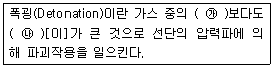
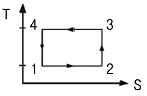

가스산업기사 (2013-09-28 기출문제)
1과목: 연소공학
1. 점화지연(Ignition delay)에 대한 설명으로 틀린 것은?
- 혼합기체가 어떤 온도 및 압력 상태 하에서 자기점화가 일어날 때 까지 약간의 시간이 걸린 다는 것이다.
- 온도에도 의존하지만 특히 압력에 의존하는 편이다.
- 자기점화가 일어날 수 있는 최저온도를 점화 온도(Ignition Temperature)라 한다.
- 물리적 점화지연과 화학적 점화지연으로 나눌 수 있다.
(정답률: 87%)

2. 정압 하에서 30℃의 기체가 100℃로 되었을 때의 부피는 최초 부피의 몇 배가 되는가?
- 1.23배
- 1.52배
- 2.23배
- 2.52배
(정답률: 61%)
3. 다음 혼합가스 중 폭굉이 가장 잘 발생되기 쉬운 것은?
- 수소 - 공기
- 수소 - 산소
- 아세틸렌 - 공기
- 아세틸렌 - 산소
(정답률: 85%)
4. 다음 괄호안에 알맞은 말은 다음 중 어느 것인가?

- ㉮연소 ㉯화염의 전파속도
- ㉮음속 ㉯화염의 전파속도
- ㉮화염온도 ㉯충격파
- ㉮화염의 전파속도 ㉯음속
(정답률: 81%)
5. 수소의 연소하한계는 4v%이고, 연소상한계는 75v%이다. 수소 가스의 위험도는 얼마인가?
- 0.95
- 4
- 17.75
- 75
(정답률: 92%)
6. 어떤 혼합가스의 조성이 CO : 15%. H2 : 30%, CH4 : 55%일 때 혼합가스의 연소하한계(LEL) 값은 얼마인가? (단, 각 가스의 연소한계는 CO : 12.5~74%, H2 : 4~75%. CH4 : 5~15%이다.)
- 5.08%
- 6.38%
- 18.70%
- 22.07%
(정답률: 69%)
7. 산소 없이도 자기분해 폭발을 일으키는 가스가 아닌 것은?
- 프로판
- 아세틸렌
- 산화에틸렌
- 히드라진
(정답률: 69%)
8. 버너 출구에서 가연성 기체의 유출 속도가 연소 속도보다 큰 경우 불꽃이 노즐에 정착되지 않고 꺼져버리는 현상을 무엇이라 하는가?
- boil over
- flash back
- blow off
- back fire
(정답률: 91%)
9. 일반적으로 온도가 10℃ 상승하면 반응속도는 약 2배 빨라진다. 40℃의 반응온도를 100℃로 상승시키면 반응속도는 몇 배 빨라지는가?
- 26
- 25
- 24
- 23
(정답률: 80%)
10. 분진폭발은 가연성 분진이 공기 중에 분산되어 있다가 점화원이 존재할 때 발생한다. 분진폭발이 전파되는 조건과 다른 것은?
- 분진은 가연성이어야 한다.
- 분진은 적당한 공기를 수송할 수 있어야 한다.
- 분진은 화염을 전파할 수 있는 크기의 분포를 가져야 한다.
- 분진의 농도는 폭발범위를 벗어나 있어야 한다.
(정답률: 90%)
11. 연소폭발을 방지하기 위한 방법이 아닌 것은?
- 가연성물질의 제거
- 조연성물질의 혼입차단
- 발화원의 소거 또는 억제
- 불활성 가스 제거
(정답률: 89%)
12. 연료의 저발열량과 고발열량의 차이는 연료 중 어느 성분 때문인가?
- 탄소
- 유황
- 수소
- 산소
(정답률: 63%)
13. 프로판과 부탄이 각각 50% 부피로 혼합되어 있을 때 최소 산소농도(MOC)의 부피 %는? (단, 프로판과 부탄의 연소하한계는 각각 2.2v%, 1.8v%이다.)
- 1.9%
- 5.5%
- 11.4%
- 15.1%
(정답률: 58%)
14. 대기 중에 대량의 가연성 가스나 인화성 액체가 유출되어 발생 증기가 대기 중의 공기와 혼합하여 폭발성인 증기운을 형성하고 착화 폭발 하는 현상은?
- BLEVE
- UVCE
- Jet fire
- Flash over
(정답률: 84%)
15. 층류예혼합화염의 특징이 아닌 것은?
- 연소속도가 난류예혼합화염에 비해 느리다.
- 화염의 두께가 난류예혼합화염에 비해 두껍다.
- 청색을 띤다.
- 난류예혼합화염보다 휘도가 낮다.
(정답률: 73%)
16. 이상기체의 성질에 대한 설명 중 틀린 것은?
- 기체 분자 간 인력이나 반발력이 존재한다.
- 분자의 충돌로 총 운동에너지가 감소되지 않는 완전 탄성체이다.
- OK에서 부피는 0이여야 하며, 평균 운동에너지는 절대 온도에 비례한다.
- 이상기체 상태방정식은 높은 온도, 낮은 압력 조건에서 실제가스에 비교적 잘 적용된다.
(정답률: 75%)
17. 고체 가연물을 연소시킬 때 나타나는 연소형태를 순서대로 바르게 나열한 것은?
- 표면연소- 증발연소 - 분해연소
- 표면연소 - 분해연소 - 증발연소
- 증발연소 - 분해연소 - 표면연소
- 증발연소 - 표면연소 - 분해연소
(정답률: 54%)
18. 다음 중 연소의 정의에 대하여 가장 잘 설명한 것은?
- 탄화수소가 공기 중의 산소와 화합하는 현상
- 탄소, 수소 등의 가연성물질이 산소와 화합하여 열과 빛을 발하는 현상
- 연료 중의 탄소와 산소가 화합하는 현상
- 이산화탄소와 수증기를 생성하기 위한 연료의 화학반응
(정답률: 94%)
19. 다음 중 프로판의 완전연소 반응식을 옳게 나타낸 것은?
- C3H8 ＋2O2 → 3CO＋4H2O
- C3H8 ＋5O2 → 3CO2 ＋4H2O
- C3H8 ＋3O2 → 3CO2 ＋4H2O
- C3H8 ＋9/2O2 → 3CO＋4H2O
(정답률: 86%)
20. 소형가열로, 열처리로 등 비교적 소규모의 가열장치에 사용되며 공기압을 높일수록 무화 공기량이 저감되는 버너는?
- 고압기류식 버너
- 저압기류식 버너
- 유압식 버너
- 선회식 버너
(정답률: 71%)
2과목: 가스설비
21. 시간당 66400kcal를 흡수하는 냉동기의 용량은 몇 냉동톤인가?
- 20
- 24
- 28
- 32
(정답률: 77%)
22. 다음 제조법 중 가장 높은 압력을 사용하는 것은?
- 암모니아 합성
- 폴리에틸렌 합성
- 메탄올 합성
- 오일 가스화
(정답률: 62%)
23. 연소기의 분류 중 연소 시 1차 공기의 혼합비 율과 혼합방법에 의한 분류가 아닌 것은?
- 개방식
- 분젠식
- 적화식
- 전 1차 공기식
(정답률: 56%)
24. 도시가스 배관공사 시 주의사항으로 틀린 것은?
- 현장마다 그 날의 작업공정을 정하여 기록한다.
- 작업현장에는 소화기를 준비하여 화재에 주의한다.
- 현장 감독자 및 작업원은 지정된 안전모 및 완장을 착용한다.
- 가스의 공급을 일시 차단할 경우에는 사용자 에게 사전통보하지 않아도 된다.
(정답률: 93%)
25. 전기방식시설의 유지관리를 위해 전위 측정용 터미널을 설치하였다. 다음 중 적당한 것은?
- 희생양극법 - 배관길이 300m 이내 간격
- 외부전원법 - 배판길이 400m 이내 간격
- 선택적배류법 - 배관길이 400m 이내 간격
- 강제배류법 - 배관길이 500m 이내 간격
(정답률: 86%)
26. 다음 [그림]은 카르노 냉동사이클을 표시한 것이다. 열을 방출하며 등온압축률 하는 과정은?

- 1 - 2의 과정
- 2 - 3의 과정
- 3 - 4의 과정
- 4 - 1의 과정
(정답률: 73%)
27. 유량조절이 정확하고 용이하며 기밀도가 커서 기체의 배관에 주로 사용되는 밸브는?
- 글로브 밸브
- 체크 밸브
- 게이트 밸브
- 안전 밸브
(정답률: 82%)
28. 20층인 아파트에서 1층의 가스압력이 1.8㎪일 때, 20층에서의 압력은 약 몇 ㎪인가? (단, 20층까지의 고저차는 60m, 가스의 비중은 0.65, 공기의 비중량은 1.3㎏/m3이다.)
- 1
- 2
- 3
- 4
(정답률: 62%)
29. 도시가스 수요가 증가함으로써 가스압력이 부촉하게 될 때 사용하는 가스공급 시설은?
- 가스 홀더
- 압송기
- 정압기
- 가스계량기
(정답률: 60%)
30. 다음 중 가스 용기재료의 구비조건으로 가장 거리가 먼 것은?
- 충분한 강도를 가질 것
- 무게가 무거울 것
- 가공 중 결함이 생기지 않을 것
- 내식성을 가질 것
(정답률: 93%)
31. 50kg의 프로판(비중 : 1.53)이 용기에 충전되어 있다. 이 프로판가스는 최소 몇 L의 부피가 되겠는가? (단, 프로판 정수는 2.35이다.)
- 213.6
- 200.8
- 193.4
- 117.5
(정답률: 64%)
32. 액화석유가스용 압력조정기 중 1단 감압식 준저압조정기 조정압력은?
- 2.3㎪~3.3㎪
- 5㎪~30㎪ 이내에서 제조자가 설정한 기준압력의 ±20%
- 57㎪~83㎪
- 0.032㎫~0.083㎫
(정답률: 69%)
33. 왕복등식 압축기에서 압축기의 흡입온도 상승의 원인이 아닌 것은?
- 흡입밸브 불량에 의한 역류
- 전단 냉각기의 능력 저하
- 전단의 쿨러 과냉
- 관로에 수열이 있을 경우
(정답률: 83%)
34. 지표면의 비저항보다 깊은 곳의 비저항이 낮은 경우 적용하는 양극설치방법은?
- 희생양극법
- 천매전극법
- 선택배류법
- 심매전극법
(정답률: 64%)
35. 도시가스 제조 원료가 가지는 특성으로 가장 거리가 먼 것은?
- 파라핀계 탄화수소가 적다.
- C/H 비가 작다.
- 유황분이 적다.
- 비점이 낮다.
(정답률: 56%)
36. 자동절체식 조정기를 사용할 때의 이점을 가장 잘 설명한 것은?
- 가스 소비 시 압력변동이 크다.
- 수동절체방식보다 가스 발생량이 크다.
- 용기 교환시기가 짧고 계획배달이 가능하다.
- 수동절체방식보다 용기설치 본수가 많다.
(정답률: 57%)
37. 도시가스 배관을 설치하고 나서 그 지역에 대규 모로 주택이 들어서거나 주택 및 인구가 증가되면 피크 시 가스 공급압력이 저하되게 되는데 이를 방지하기 위하여 인근 배관과 상호 연결을 하여 압력저하를 방지하는 공급방식은?
- 압력보충배관 설계
- 송출압 보충배관 설계
- 저압보충망 배관설계
- 환상망배관 설계
(정답률: 66%)
38. 스프링 안전밸브에 대한 설명으로 틀린 것은?
- 설정압력 이상이 되면 서서히 개방(open) 된다.
- 저장탱크 또는 용기에서 주로 사용된다.
- 고압가스의 양을 결정하여 이 양을 충분히 분출시킬 수 있는 구경이어야 한다.
- 한번 작동하면 밸브 전체를 교환하여야 한다.
(정답률: 86%)
39. 금속의 내부응력를 제거하고 가공경화된 재료를 연화시켜 결정조직을 결정하고 상온가공을 용이하게 할 목적으로 하는 열처리는?
- 담금질
- 불림
- 뜨임
- 풀림
(정답률: 68%)
40. 용접부 내부 결함 검사에 가장 적합한 방법으로서 검사결과의 기록이 가능한 검사방법은?
- 자분검사
- 침투검사
- 방사선투과검사
- 누설검사
(정답률: 82%)
3과목: 가스안전관리
41. 탱크로리로부터 저장탱크에 LPG를 주입(注 入)할 경우 다음 중 이송작업기준을 준수하며 작업을 하여야 하는 자는?
- 충전원
- 안전관리자
- 운반책임자
- 운반자동차운전자
(정답률: 73%)
42. 고압가스 안전성 평가기준에서 정성적 위험성 평가 분석방법이 아닌 것은?
- 체크리스트(CheckIist)기법
- 위험과 운전분석(HAZOP)기법
- 사고예상질문분석(WHAT-IF)기법
- 원인결과분석(CCA)기법
(정답률: 68%)
43. 고압가스 일반제조시설 중 저장탱크에 가스를 얼마 이상 저장하는 것에는 가스방출장치를 설치해야 하는가?
- 3m3
- 5m3
- 10m3
- 15m3
(정답률: 75%)
44. 가연성가스를 압축하는 압축기와 충전용 주관 사이에는 무엇을 설치하는가?
- 역류방지밸브
- 역화방지장치
- 유분리기
- 액분리기
(정답률: 66%)
45. 다음 중 용기의 각인 표시 기호로 틀린 것은?
- 내용적 : V
- 내압시험압력 : T.P
- 최고충전압력 : HP
- 동판 두께 : t
(정답률: 88%)
46. 지름이 10m인 구형가스 홀더의 최고사용압력이 5.0㎫일 때 압축가스 저장 능력은 몇 m3인가?
- 2940
- 3140
- 24704
- 26704
(정답률: 37%)
47. 액화가스의 고압가스설비 등에 부착되어 있는 스프링식 안전밸브는 상용의 온도에서 그 고압 가스설비 등 내의 액화가스의 상용의 체적이 그 고압가스설비 등 내의 내용적의 몇 %까지 팽창 하게 되는 온도에 대응하는 그 고압가스설비 등 내외 압력에서 작동하는 것으로 하여야 하는가?
- 90%
- 92%
- 95%
- 98%
(정답률: 48%)
48. 고압가스 내동제조시설의 냉동능력 합산기준으로 틀린 것은?
- 냉매가스가 배관에 의하여 공통으로 되어있는 냉동설비
- 냉매계통을 달리하는 2개 이상의 설비가 1개의 규격품으로 인정되는 설비 내에 조립되어 있는 것
- 4원(元) 이상의 냉동방식에 의한 냉동설비
- 모터 등 압축기의 동력설비를 공통으로 하고 있는 냉동 설비
(정답률: 76%)
49. 중형가스온수보일러는 보일러의 전가스소비량이 총 발열랑 기준으로 얼마의 것을 말하는가?
- 70㎾ 초과 232.6㎾ 이하인 것
- 80㎾ 초과 332.6㎾ 이하인 것
- 90㎾ 초과 432.6㎾ 이하인 것
- 100㎾ 초과 532.6㎾ 이하인 것
(정답률: 62%)
50. 질소충전용기에서 질소의 누출여부를 확인하는 방법으로 가장 쉽고 안전한 방법은?
- 비눗물을 사용
- 기름을 사용
- 전기스파크를 사용
- 소리를 감지
(정답률: 91%)
51. 산소의 품질 검사에 사용하는 시약으로 맞는 것은?
- 동·암모니아 시약
- 발연황산 시약
- 브롬 시약
- 피로카롤 시약
(정답률: 64%)
52. 저장탱크에 액화가스를 충전할 때 저장탱크 내용적의 최대 몇 %까지 채워야 하는가?
- 85%
- 90%
- 95%
- 98%
(정답률: 77%)
53. 다음 중 액화가스의 안전 및 사업법상 검사대 상이 아닌 콕은?
- 퓨즈콕
- 상자콕
- 주물연소기용노즐콕
- 호스콕
(정답률: 66%)
54. 아세틸렌가스를 온도에 관계없이 2.5㎫의 압력으로 압축할 때에 첨가해야 할 희석제로서 옳지 않은 것은?
- 에틸렌
- 메탄
- 이소부탄
- 일산화탄소
(정답률: 67%)
55. LPG 지상 저장탱크 주위에 방류둑을 설치해야 하는 저장탱크의 크기는?
- 500톤 이상
- 1,000톤 이상
- 1,500톤 이상
- 2,000톤 이상
(정답률: 72%)
56. 고압가스 일반제조시설에서 저장탱크 및 처리 설비를 실내에 설치하는 경우에 대한 설명으로 틀린 것은?
- 저장탱크실 및 처리설비실은 천정·벽 및 바닥의 두께가 30㎝ 이상인 철근콘크리트로 만든 실로서 방수처리가 된 것으로 한다.
- 저장탱크 및 처리설비실은 각각 구분하여 설치하고 자연통풍시설을 갖춘다.
- 저장탱크의 정상부와 저장탱크실 천정과의 거리는 60㎝ 이상으로 한다.
- 저장탱크에 설치한 안전밸브는 지상 5m 이상의 높이에 방출구가 있는 가스방출관을 설치한다.
(정답률: 72%)
57. 액화석유가스 성분 중 프로판의 성질에 대한 설명으로 틀린 것은?
- 착화온도는 약 450~550℃ 정도이다.
- 끓는점은 약 -42.1℃ 정도이다.
- 임계온도는 약 96.8℃정도이다.
- 증기압은 21℃에서 28.4㎪ 정도이다.
(정답률: 57%)
58. 저장탱크에 의한 액화석유가스 사용시설에서 배관 이음부와 절연조치를 한 전선과의 이격거리는?
- 10㎝ 이상
- 20㎝ 이상
- 30㎝ 이상
- 60㎝ 이상
(정답률: 69%)
59. 아세틸렌용 용접용기 제조 시 내압시험압력이란 최고압력 수치의 몇 배의 압력을 말하는가?
- 1.2
- 1.5
- 2
- 3
(정답률: 67%)
60. 아세틸렌가스를 용기에 충전하는 장소 및 충전용기 보관장소에는 화재 등에 의한 파열을 방지하기 위하여 무엇을 설치해야 하는가?
- 방화설비
- 살수장치
- 냉각수펌프
- 경보장치
(정답률: 76%)
4과목: 가스계측
61. HCN 가스의 검지반응에 사용하는 시험지와 반응색이 옳게 짝지어진 것은?
- KI전분지-청색
- 초산벤젠지-청색
- 염화파라듐지-적색
- 염화제일구리착염지-적색
(정답률: 71%)
62. 다음 가스 분석법 중 흡수분석법에 해당되지 않는 것은?
- 헴펠법
- 게겔법
- 오르자트법
- 우인클러법
(정답률: 86%)
63. 어느 수용가에 설치한 가스미터의 기차를 측정하기 위하여 지시량을 보니 100m3을 나타내었다. 사용공차를 ±4%로 한다면 이 가스미터에는 최소 얼마의 가스가 통과되었는가?
- 40m3
- 80m3
- 96m3
- 104m3
(정답률: 85%)
64. 일반적으로 장치에 사용되고 있는 부르동관 압력계 등으로 측정되는 압력은?
- 절대압력
- 게이지압력
- 진공압력
- 대기압
(정답률: 85%)
65. 사용 온도범위가 넓고, 가격이 비교적 저렴하며, 내구성이 좋으므로 공업용으로 가장 널리 사용되는 온도계는?
- 유리온도계
- 열전대온도계
- 바이메탈온도계
- 반도체 저항온도계
(정답률: 73%)
66. 추종제어에 대한 설명으로 옳은 것은?
- 목표치가 시간에 따라 변화하지만 변화의 모양이 미리 정해져 있다.
- 목표치가 시간에 따라 변화하지만 변화의 모양은 예측할 수 없다.
- 목표치가 시간에 따라 변하지 않지만 변화의 모양이 일정하다.
- 목표치가 시간에 따라 변하지 않지만 변화의 모양이 불규칙하다.
(정답률: 66%)
67. 다음 중 막식 가스미터는?
- 그로바식
- 루츠식
- 오리피스식
- 터빈식
(정답률: 60%)
68. 오르자트 가스 분석기에서 가스의 흡수 순서로 옳은 것은?
- CO → CO2 → O2
- CO2 → CO → O2
- O2 → CO2 → CO
- CO2 → O2 → CO
(정답률: 82%)
69. 산화철, 산화주석 등은 350℃ 전후에서 가연성가스를 통과시키면 표면에 가연성가스가 흡착되어 전기전도도가 상승하는 성질을 이용하여 가스 누출을 검지하는 방법은?
- 반도체식
- 접촉연소식
- 기체열전도도식
- 적외선흡수식
(정답률: 63%)
70. 다음 중 SI 단위의 보조단위는 어느 것인가?(문제 오류로 문제 및 보기 내용이 정확하지 않은 것같습니다. 정확한 내용을 아시는분 께서는 오류 신고를 통하여 내용 작성 부탁 드립니다. 정답은 4번 입니다.)
- 밀도
- 면적
- 속도
- 평면각
(정답률: 71%)
71. 가스크로마토그래피에서 이상적인 검출기의 구비조건으로 가장 거리가 먼 내용은?
- 적당한 감도를 가져야 한다.
- 모든 용질에 대한 감응도가 비슷하거나 선택 적인 감응을 보여야 한다.
- 일정 질량 범위에 걸쳐 직선적인 감응도를 보여야 한다.
- 유속을 조절하여 감응시간을 빠르게 할 수 있어야 한다.
(정답률: 53%)
72. 흡수법에 사용되는 각 성분가스와 그 흡수액으로 짝지어진 것 중 틀린 것은?
- 이산화탄소 - 수산화캄륨 수용액
- 산소 - 수산화칼륨＋피로카롤 수용액
- 일산화탄소 - 염화칼륨 수용액
- 중탄화수소 - 발연황산
(정답률: 54%)
73. 상대습도가 0라 함은 어떤 뜻인가?
- 공기 중에 수증기가 존재하지 않는다.
- 공기 중에 수증기가 760nmHg 만큼 존재 한다.
- 공기 중에 포화상태의 습증기가 존재한다.
- 공기 중에 수증기압이 포화증기압보다 높음을 의미 한다.
(정답률: 86%)
74. 액면계의 구비조건으로 틀린 것은?
- 내식성 있을 것
- 고온, 고압에 견딜 것
- 구조가 복잡하더라도 조작은 용이할 것
- 지시, 기록 또는 원격 측정이 가능할 것
(정답률: 89%)
75. 다음 중 유체의 밀도 측정에 이용되는 기구는?
- 피크노미터(Pycno meter)
- 벤투리미터(Venturi meter)
- 오리피스미터(Orifice meter)
- 피토우관(Pitot tube)
(정답률: 66%)
76. 기체크로마토그래피(gas chromatography)에 대한 설명으로 틀린 것은?
- 기체-액체크로마토그래피(GLC)가 대표적인 기기이다.
- 최근에는 열린관 컬럼(column)을 주로 사용 한다.
- 시료를 이동시키기 위하여 흔히 사용되는 기체는 헬륨가스이다.
- 시료의 주입은 반드시 기체이어야 한다.
(정답률: 71%)
77. 진동이 발생하는 장치의 진동을 억제시키는데 가장 효과 적인 제어동작은?
- D 동작
- P 동작
- I 동작
- 뱅뱅 동작
(정답률: 61%)
78. 계랑, 계측기의 교정이라 함은 무엇을 뜻하는가?
- 계량, 계측기의 지시 값과 표준기의 지시 값과의 차이를 구하여 주는 것
- 계량, 계측기의 지시 값을 평균하여 참값과의 차이가 없도록 가산하여 주는 것
- 계량, 계측기의 지시 값과 참값과의 차를 구하여 주는 것
- 계량, 계측기의 지시 값을 참값과 일치하도록 수정하는 것
(정답률: 81%)
79. 가스미터의 종류 중 정도(정확도)가 우수하여 실험실용 등 기준기로 사용되는 것은?
- 막식 가스미터
- 습식 가스미터
- Roots 가스미터
- Orifice 가스미터
(정답률: 81%)
80. 열전도형 진공계의 종류가 아닌 것은?
- 전리 진공계
- 피라니 진공계
- 서미스터 진공계
- 열전대 진공계
(정답률: 56%)
점화지연은 혼합기체가 자기점화가 일어날 때까지 걸리는 시간을 의미합니다. 이 시간은 혼합기체의 온도, 압력, 화학 조성 등에 따라 달라집니다. 따라서 온도와 압력 모두 점화지연에 영향을 미치지만, 일반적으로 압력이 더 큰 영향을 미칩니다. 이는 압력이 높을수록 혼합기체 분자들이 서로 더 가까이 위치하게 되어 화학 반응이 더 빨리 일어나기 때문입니다. 따라서 온도와 압력 모두 점화지연에 영향을 미치지만, 압력이 더 큰 영향을 미칩니다.